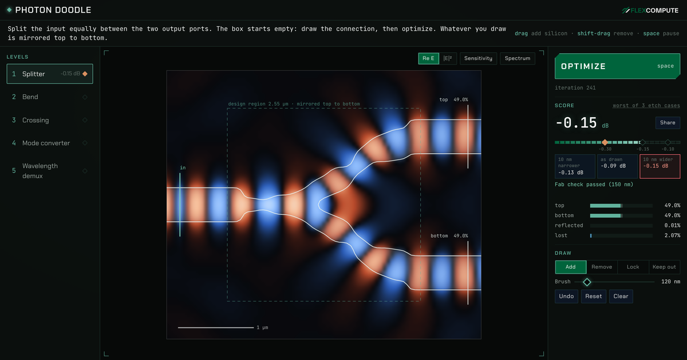

Photon Doodle
Draw silicon on a photonic chip and watch the light solve in real time. It needs a laptop or desktop screen and a mouse or trackpad: open this page on a computer to play.

Draw silicon on a photonic chip and watch the light solve in real time. It needs a laptop or desktop screen and a mouse or trackpad: open this page on a computer to play.
